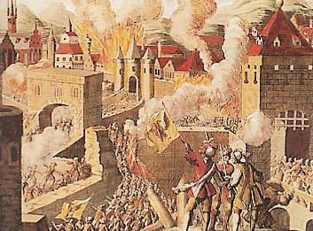

|


| |
|

|
|
| THE ENGAGÉS, OR THE "THIRTY-SIX
MONTHS"
The engagés (indentured workers) were young men,
mostly tradesmen, with little future in France because the
trades were overcrowded there and the title of maître (master),
which gave the right to run one's own business, was becoming less and less
attainable. They signed on for three years with recruiters
acting for seigneurs or religious communities
looking for labour or for people to settle on their fiefs. The recruiter took care of everything: advances for the voyage,
passage and food. They earned an annual wage of 20 to 150
livres, depending on their trade. At the end of their service they were free
to stay in the country or go back to France.
Mathieu Choret arrived in
New France in 1643 as an engagé of the Jesuits, with a
three-year contract.
The first time the records
mention him in the country, he
is at Trois-Rivières, working as an engagé for the Jesuits. He earns a hundred livres a
year. According to the Journal
des Jésuites, he had been there since November
1645, replacing the settler Pierre Gonthier, who had gone back to
Quebec, brought by Robert Hache, to do the cooking there " in
place of our brothers, who found it too hard". Mathieu
probably also spent time in the Hochelaga area (since
in his 1647 marriage contract he says he lives in Montréal)?
|
|

|
|
TROIS-RIVIÈRES
Back in Canada after the Kirke brothers'
capture of Quebec, Champlain set up, thirty leagues from
Quebec, a new fort that
would also serve as a fur-trading post. In 1634
he commissioned Laviolette, an employee of the Company of One Hundred Associates, to take a
boat to the mouth of the Saint-Maurice River with the
men and equipment needed for a settlement on board. The
Jesuit Fathers Jean de Brébeuf and Antoine Daniel were part of the
group.
So, from the founding of
Trois-Rivières, the Jesuits had a house there, where
we find Mathieu at work in 1645. |
|
|
|
THE SOCIETY OF JESUS
At the beginning of the 17th century the French Catholic
Church was undergoing great change. The fear of hell was
stronger than ever; Christians made it their duty to fight the work
of Satan on every front. The elites could see that the
world as they knew it was coming to an end. There were
very strong eschatological currents (the Reformation, Protestantism...).
The world was heading for ruin; the Last Judgment was coming. If the heathen
were not converted, Christians would go to hell. For them, the whole
earth had to be converted, since they were answerable to God for
all those souls.
It was in this spirit that the Jesuits, a religious community founded in 1540 by Ignatius of
Loyola, spread all over the world. The Jesuits saw
themselves as God's soldiers. Its members were the best recruits: intelligent, eloquent men, able
to learn native languages and make as many conversions
as possible. They arrived in Canada in 1625. They wrote
annals reporting everything that happened in their mission. These documents
were sent to their superior in France and published, and
they were a great success in the salons, where their exoticism caused a
sensation. These are the "Jesuit Relations",
a gold mine for historians. When you
read them, you see that only one thing guided their actions: making
their faith known to the native peoples and baptizing them.
|
|

|
For that they were ready to
endure anything; for them, death after torture was their most
intense desire, since dying that way guaranteed entry into
Heaven.
Today we would
call them fundamentalists. Other times, other ways....
|

|
|
|
|
WHY LEAVE FRANCE?
And where does Mathieu fit into all this?
Why does he decide to
become an engagé of the Jesuits for thirty-six months in Canada? One thing is certain: he is regarded as a good Catholic, since
the Jesuits chose good men as engagés, not wanting
them to set a bad example for the native peoples they were so
eager to convert.
The France of
Mathieu's day was marked by many wars with England,
Spain, the Netherlands and others. This is what is called the Thirty
Years' War, which began in 1618. Several regions
of France were devastated in the fighting.
Mathieu, born
in the early 1620s, had therefore never known anything but wartime
in his country.

In those troubled times,
too, the public finances were in a precarious state, since taxes often
went unpaid. Representatives of royal authority and seigneurs
then had the peasants' goods seized. Popular
uprisings, in the countryside as well as in the towns, added to
the general confusion. This almost constant state of war
bred epidemics that decimated the population. A
"little ice age" began in the 16th century and lasted more
than two centuries. The result was bad harvests and famine. The
population of Europe declined.
France was also shaken by a series of popular uprisings
protesting against the absolutism of royal authority. This
would lead to the movement known as the "Fronde"
in 1648.
In short, life in France was not
cheerful, and great poverty drove many young men
onto the ships to New France. No doubt there was also
an element of dreaming: the New World was painted in such glowing colours,
with talk of a climate of freedom, extraordinary hunting and fishing
and immense forests, but also of the cruel ways of the
native peoples.
A simple taste for adventure and
the lure of freedom may have been enough. Under the Ancien
Régime in France, the father of a family held very strict rights
over his children, notably regarding marriage and setting up in life, and
families did not hesitate to punish disobedient children by
locking them up, often for trifles. Given that the
age of majority was only reached at twenty-five, emigration could no
doubt become an attractive alternative for some young men.
Which of these reasons might explain
Mathieu's choice, or a little of each? Or some other reason entirely
that we will never know?
|
|
BACK TO FRANCE
At the end
of his three-year contract, Mathieu takes
ship for France on Wednesday, October 31, 1646 (Journal des
Jésuites). An engagé's contract
included his passage both ways. That day two
ships leave Quebec; on the first is a Jesuit,
Father Quentin, with Robert Hache. M. de Maisonneuve, M.
Giffard and M. Tronquet, all important men in the colony, are
also on board. On the second ship are the sons of M. de Repentigny,
M. Couillard, M. Giffard, etc. We can assume that
Mathieu sailed on the first ship, since Robert Hache
went with him to La Rochelle when they reached France.
Historians
believe that before 1663 two-thirds of the engagés
chose to return to France. Mathieu Choret is one of the
third of the engagés who decided to settle in Canada for good.
But to do that he has to go back to France for what he most
needs to make his permanent settlement in this New World a success:
a wife.
There are almost no marriageable women in
Canada (the Filles du Roy (King's Daughters) will only arrive twenty years later), and Mathieu may have a sweetheart waiting for him. We do not know, but given the time needed for the
crossing and the date of his marriage, we may think so,
or else choosing a wife was done very quickly in those days (most
marriages were arranged by the parents).
We
have no official proof, but it is very likely that Mathieu
Choret was the first resident of Quebec to go and marry in
France and bring his wife back to the country. |
|
|
|